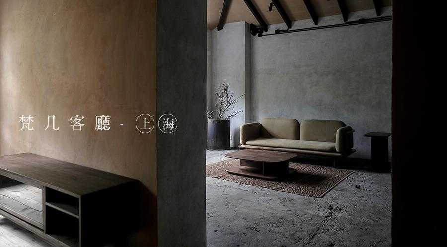
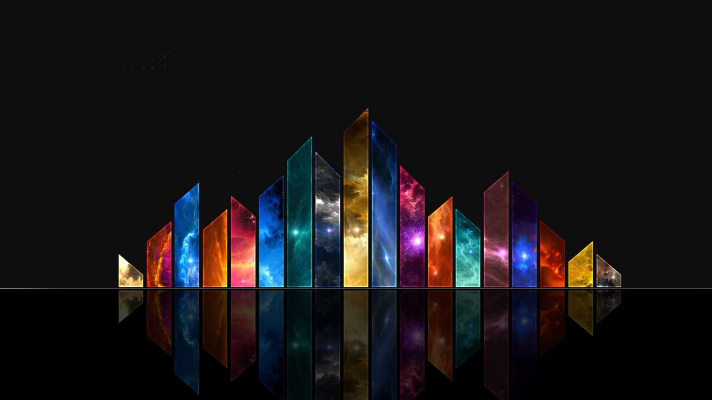
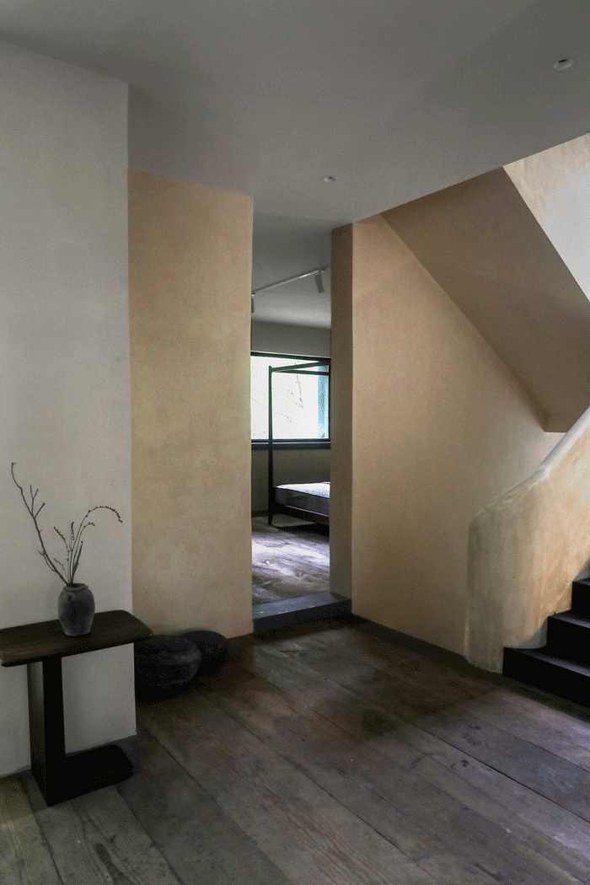
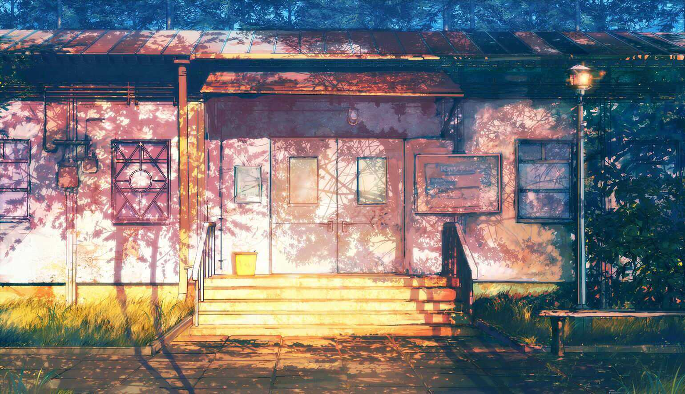
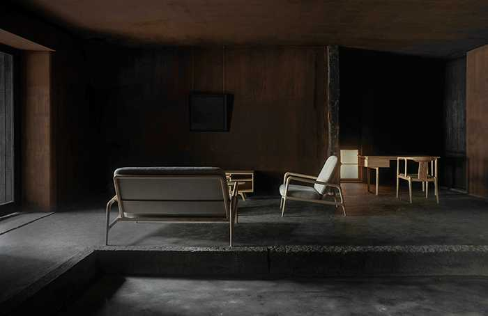
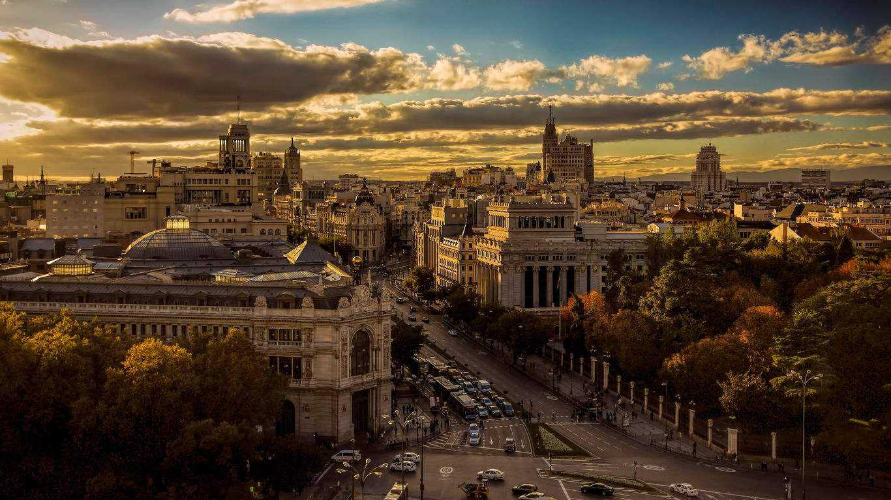
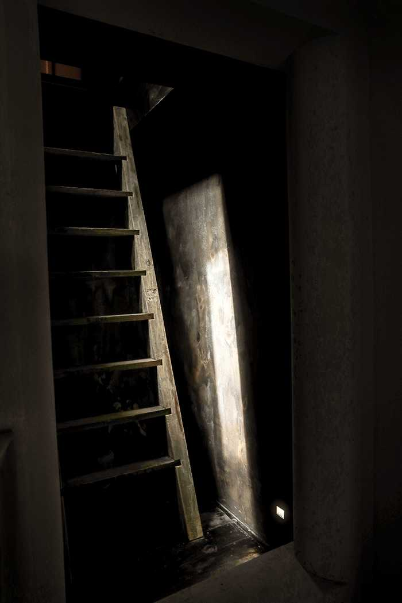
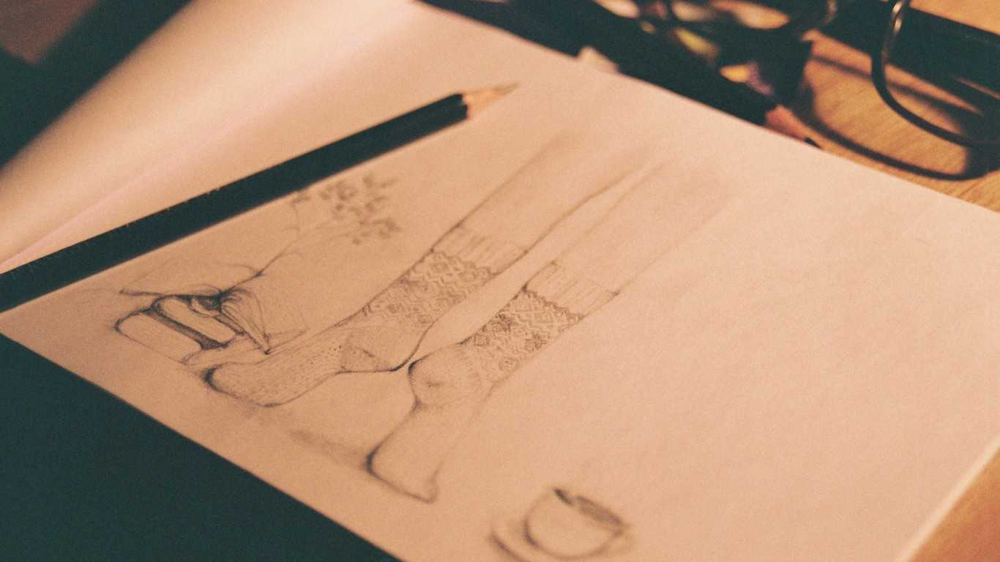

实体店
商业合作
长生于野
安于堂
Three
家具
椅
桌
床
几
柜
沙发
一枚板
其他
家居
餐厨
家居
摆件
养护
园艺
数码
文具
配饰
艺术
艺术家
展览
栏目
梵几在家
串门
ARTSTAGE
新事
梵几新店 | 上海客厅正式开幕
2018-09-20

经过三年的等待与筹备，梵几终于落地上海，选址于武康路一栋具有海派气息的洋楼。
虽然咫尺之遥便是徐汇繁华的商圈， 步入武康路却仿佛进入另一个时空，沪地独有的历史感和人文氛围迎面而来。

上海客厅所在的洋楼始建于1941年， 摩登的建筑结构和设计风格映照着沪上独有的性情。
梵几保留了空间旧有的建筑结构，在此基础上运用不同的材质，融入艺术基调，
意在打造艺术化的生活美学和沉浸式的空间体验，呈现拙朴材料于光影之间的侘寂美感。
为此，梵几也邀请美学品牌PhaedoStudio，一同设计上海客厅店。

PhaedoStudio追求在平凡和残缺之物当中发掘高贵、重塑物质本身的尊严与美，希望以这种形式创造当代的、源于中国人自身情感的美学。
因而在空间设计上，梵几和phaedo更多地尝试使用传统而寻常的建筑材质，如石灰和夯土，运用古法与手工的锻造，呈现不同的肌理与美感。
期待将平凡之物的表现力呈现出来。

客厅一层空间着重突出庄严的氛围。充满仪式感的接待方式和陈列视觉，
使人迅速溶入一种沉浸式的体验。暗红色石灰墙的灵感来自于欧洲中世纪房屋，斑驳的痕迹和深沉的色调带有油画的质感。
地面夯土采用了圆明园制作生土蓄水池的古法工艺，历经一个月的纯手工拍打以及养护而完成。
未来，它还会随着时间，更加密实、紧致和美丽。

二层与三层空间更多地运用了自然材质。地面坑洼的表面肌理是混凝土楼板原本的样子，
木梁尖顶也是本就存在建筑中的，梵几和PhaedoStuido所做的只是把木梁上的油漆细细打磨干净，
调整它的颜色，显露出属于木头与泥砂的真实魅力。
除此之外，从各地淘来的老物件和传统材质在空间中以新的形式重生，让历史与现代在此融合。

四层阁楼的心灵空间是整个上海客厅中唯一全新建造的部分。
阁楼空间的墙壁选用深咖色，营造入定而沉静的空间氛围。
顺着直梯向上，一束天光倾泻而下，使人在光影变化中放松身心。
未来我们将邀请心理医师加入，在空间中为有需要的客人提供心理咨询服务。

值得一提的是此次上海客厅的楼梯，采用摩洛哥传统工艺打造，
全手工打磨的乳白色石灰扶手迂回宛延地牵引了三层楼的主体结构，成为空间秩序的中心。
上海客厅的户外空间也充满了意趣。
一楼庭院白色曲折的墙面与背后葱郁的树木形成呼应；
大小石子铺就的小径向各个方向散去，在起伏的绿色小丘上下若隐若现。
四层阁楼外的一方小小天地绿植萦绕，交织的叶片和枝杈之间是上海天空中多变的云朵。
云朵之下，隐藏在闳宇崇楼和万家灯火中的梵几上海客厅，静静等待着被探索。
